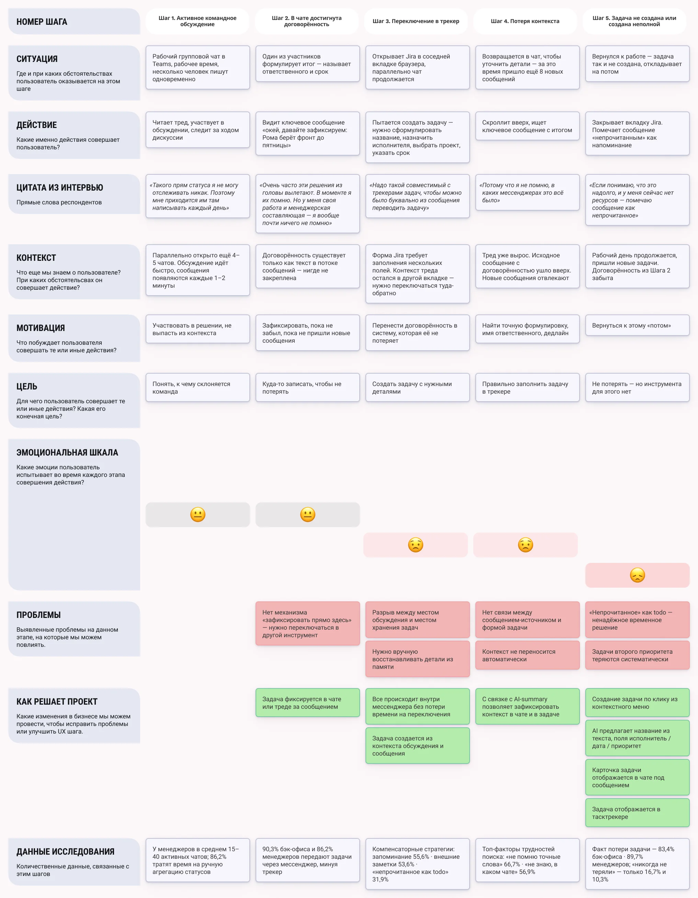
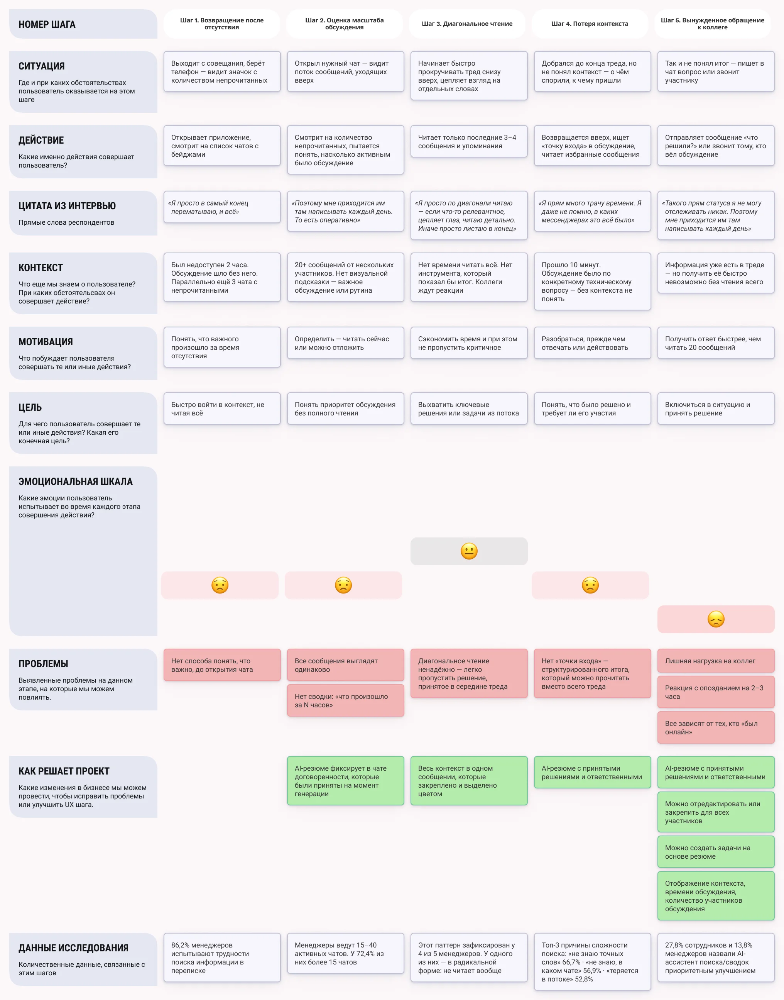
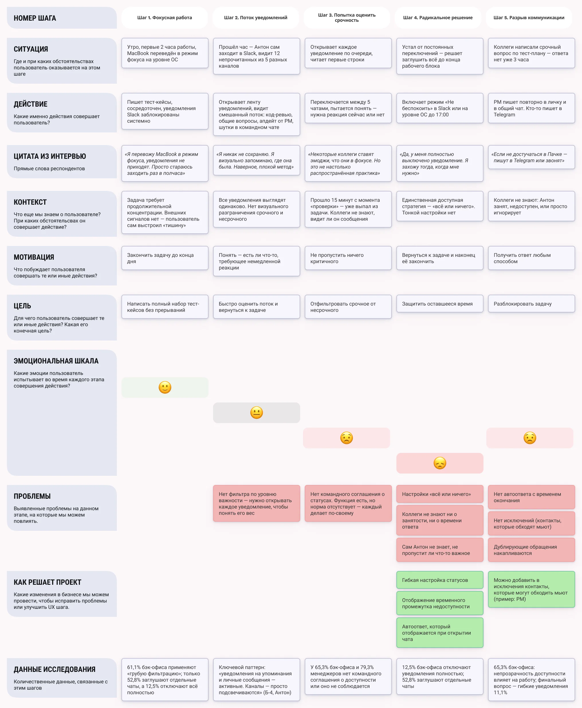
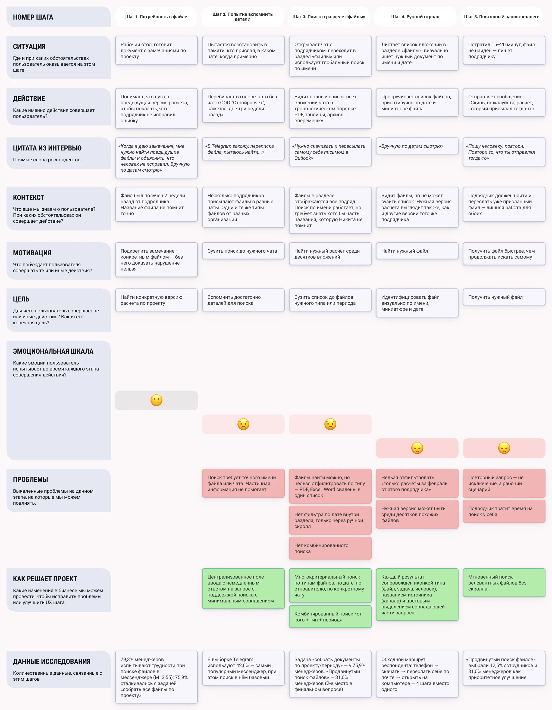

JTBD и UJM
Слой между синтезом и Figma. JTBD фиксирует, что именно пользователь пытается сделать: не проблему, а цель. UJM показывает, как он решает задачу прямо сейчас, без нашего решения, и где пиковая боль.
Зачем оба инструмента
К этому моменту было достаточно данных, чтобы начать рисовать экраны. Но мы намеренно вставили ещё один слой.
«Задачи теряются в переписке»: это проблема. «Когда договорённость достигнута, я хочу зафиксировать её с ответственным и сроком, чтобы не потерять»: это job-to-be-done. Дизайн-решение проектируется под цель, а не под проблему.
UJM нужен для другого: показать, как человек решает задачу прямо сейчас. Это позволяет найти точки максимального напряжения и именно под них спроектировать новый флоу. Без UJM есть риск решить не ту часть проблемы.
4 JTBD
Формулировка: «Когда [ситуация] — я хочу [действие] — чтобы [результат]».
Ф4: создание задачи из сообщения
Когда в рабочем чате достигнута договорённость или сформулировано поручение — я хочу зафиксировать его как структурированную задачу с ответственным и сроком — чтобы договорённость не потерялась в потоке и мне не пришлось напоминать о ней повторно.
«Чтобы не пришлось напоминать повторно»: это и экономия времени, и управленческие отношения. Повторное напоминание воспринимается как признак недоверия к команде.
Ф1: AI-суммаризация
Когда я возвращаюсь к чату с длинным обсуждением после отсутствия — я хочу получить структурированный итог одним действием, чтобы войти в контекст быстро и не беспокоить коллег вопросом «что решили?».
«Не беспокоить коллег»: желание оставаться компетентным собеседником, не переспрашивать то, что уже обсуждалось.
Ф2: статусы и автоответы
Когда я занят и не могу оперативно реагировать на входящие — я хочу, чтобы коллеги видели мой текущий статус и получали автоответ с информацией о времени доступности, чтобы не получать дублирующих запросов и не создавать ощущение игнорирования.
«Не создавать ощущение игнорирования»: не просто хотят меньше уведомлений. Хотят, чтобы молчание не интерпретировалось как безразличие.
Ф3: поиск файлов
Когда мне нужен конкретный документ из прошлой переписки, название которого я не помню точно — я хочу найти его по комбинации признаков (отправитель, период, тип файла), чтобы не листать весь список вложений вручную и не просить коллегу прислать документ повторно.
«Не просить повторно»: не просто неудобство. Повторный запрос означает, что коллега тоже отвлекается. Транзакция стоит времени двух людей.
UJM 1: договорённость достигнута, но задача теряется (Ф4)
Персона: Артём, тимлид-разработчик, Teams + Jira, ~20 активных чатов.
Сценарий: в рабочем чате завершилось обсуждение, команда договорилась: Миша готовит черновик отчёта к четвергу. Артёму нужно, чтобы это не потерялось.
- Договорённость достигнута, чат закрыт. Артём собирается зайти в Jira и создать задачу.
- Переключается в Jira. Вспоминает детали: «Миша. Черновик отчёта. К четвергу». Начинает вводить, но какой тип задачи? В каком проекте? Нужно принять несколько решений.
- В этот момент приходит новое сообщение. Артём переключается: «посмотрю секунду». Jira уходит в фоновую вкладку.
- Возвращается через 20 минут. Не помнит, создал ли задачу или только собирался. Открывает Teams, пытается найти сообщение, оно уехало вверх. Тратит 2–3 минуты на скролл.
- Задача либо не создана, либо создана без деталей. К четвергу Артём пишет Мише: «Помнишь, мы договаривались...»
Пиковая боль: переключение контекста на шаге 3. Разрыв между местом обсуждения и местом хранения задач: структурная проблема, не случайность. Решение должно происходить прямо в чате.

UJM 2: вернулся и не понимаешь, что пропустил (Ф1)
Персона: Никита, инженер-конструктор, Telegram, проектные чаты с подрядчиками.
Сценарий: вернулся с двухчасового совещания. В чате по активному проектному вопросу 30+ новых сообщений. Нужно понять, что решили.
- Открывает чат. Видит счётчик: 31 новое сообщение. Листает к концу.
- Читает последние 5–7 сообщений. Продолжение обсуждения без явного итога. Листает ещё выше.
- Диагональное чтение: цепляется за слова «итого», «решили», «договорились». Находит несколько кандидатов, читает каждый детально.
- Потратил 12 минут. Понял примерно, что произошло, но не уверен, не пропустил ли что-то важное.
- Пишет коллеге: «Я был на совещании — вкратце, к чему пришли?». Ответ через 20 минут.
Пиковая боль: шаг 4: неопределённость после прочтения. Никита потратил 12 минут и всё равно не уверен. Именно это ощущение «прочитал, но не уверен» стимулирует написать коллеге. Даже короткое резюме «что решили» устранило бы и диагональное чтение, и повторный вопрос.

UJM 3: занят, но этого не знает никто (Ф2)
Персона: Антон, QA-тестировщик, Slack, международная команда, ~60 каналов.
Сценарий: Антону нужны два часа для написания тест-кейсов без прерываний.
- Включает системный «Не беспокоить» на MacBook, потому что в Slack нет нужной настройки. Начинает работать.
- В 12:30 открывает Slack сам. Видит 7 непрочитанных каналов. Все выглядят одинаково. Открывает по одному, оценивает срочность.
- Тратит 15 минут на обработку входящих. Один вопрос от Маши: «срочно», но Антон видит это только сейчас.
- Возвращается к тест-кейсам. Фокус сбит. До конца дня работает в режиме: включить, работать, проверить, снова включить.
- Параллельно: Маша, не получив ответа, пишет в Telegram. Ещё двое написали туда же. Антон не знает об этом.
Пиковая боль: шаг 5, который Антон не видит. Коллеги в неопределённости, дублируют запросы в другой канал. Проблема не в том, что Антон недоступен: проблема, что никто не знает, когда он освободится. Решение должно быть двусторонним.

UJM 4: файл есть, но найти его невозможно (Ф3)
Персона: Никита, инженер-конструктор, Telegram, файлы от подрядчиков приходят в чаты.
Сценарий: нужна предыдущая версия расчётного файла из переписки примерно двухнедельной давности.
- Пытается вспомнить детали: кто прислал? В каком чате? Примерно когда?
- Открывает поиск. Вводит «расчёт»: сообщения из всех чатов вперемешку. Пробует «файл»: ещё хуже.
- Переходит в раздел «Медиафайлы» нужного чата. Хронологический список: PDF, xlsx, архивы, картинки: всё подряд. Листает вниз, открывает несколько похожих xlsx, не то.
- Потратил 10 минут. Пишет подрядчику: «Привет, можешь прислать тот расчёт из начала мая?»
- Подрядчик отвечает через 40 минут. Итого час ожидания файла, который технически уже есть.
Пиковая боль: шаг 3: ручной скролл через сотни файлов без фильтрации. Здесь принимается рациональное решение: написать проще, чем искать. Если поиск по комбинации «от Иванова + xlsx + апрель–май» занимает 10 секунд, поведение изменится само.

Два сквозных паттерна
Воркэраунд как норма. Непрочитанное как todo, диагональное чтение, «Не беспокоить» на уровне ОС, повторный запрос документа: устойчивые компенсации. Они существуют достаточно долго, чтобы люди перестали их замечать. Поэтому в интервью они не описываются как «проблема», а как как «то, как я работаю». Решение не должно ломать привычный флоу: оно должно встраиваться как более удобная альтернатива.
Пиковая боль часто за пределами видимости пользователя. В трёх из четырёх карт самый острый момент: не то, что ощущает пользователь, а то, что происходит за пределами его поля зрения. Задача не создана. Маша ждёт ответа. Подрядчик вынужден снова искать файл. Именно поэтому такие проблемы систематически недооцениваются: стоимость распределена между участниками коммуникации.